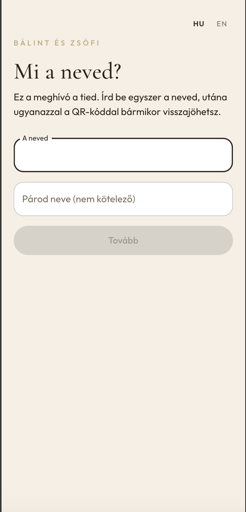
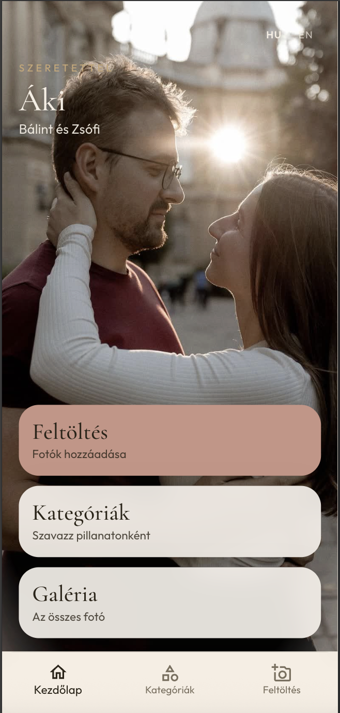
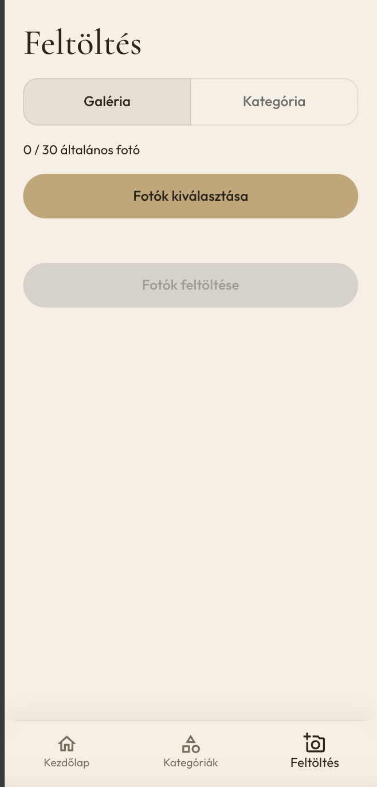
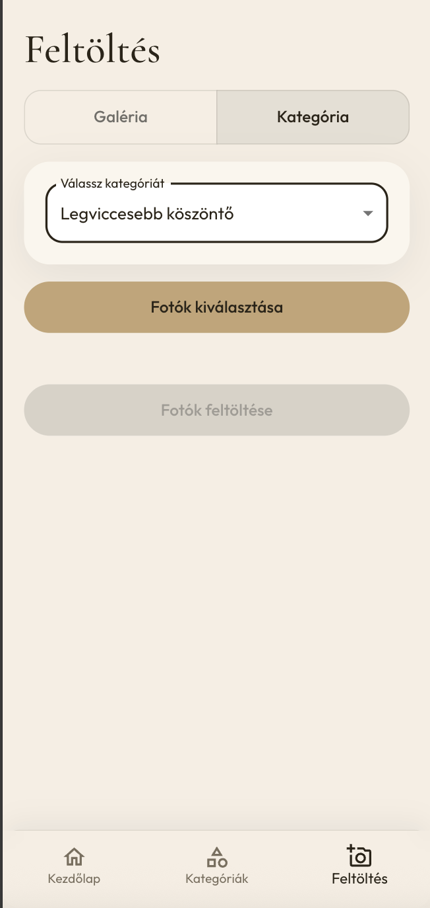
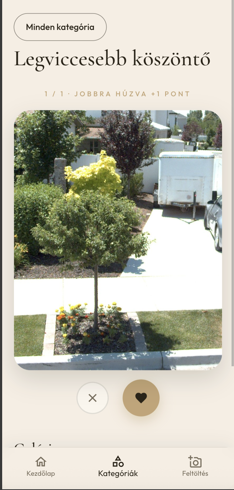
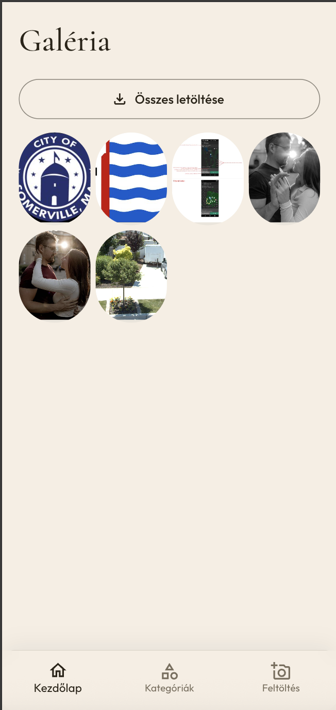

ReLiveIt
Rövid bemutató a ceremóniamesternek: így működik az est fotó- és szavazóalkalmazása a vendégek telefonján.
Csak a vendégoldal. A pár saját nézetét, az admin felületet és a végső sorrendet ez a füzet nem tartalmazza.
Első lépés
Minden vendégnek saját QR-kódja van — az asztalon, a meghívón vagy a ceremóniamesternél.
Ceremóniamester: „A telefonotok kamerájával olvassátok be a saját QR-kódotokat. Nem kell alkalmazást letölteni.”

1
Első alkalommal az app megkérdezi: Mi a neved?
Ceremóniamester: „Egyszer írjátok be a neveteket. Aki párban kaptott egy kódot, a második nevet is hozzáadhatja — a feltöltés és a szavazás mindkettőjüké.”
2
A név után a vendég a saját kezdőlapjára érkezik. Itt négy dolog van:
Alul a sávon bármikor vissza lehet lépni a kezdőlapra, a kategóriákra vagy a feltöltésre.
Ceremóniamester: „Először töltsétek fel a képeiteket, aztán szavazzatok. Bármilyen telefonnal készült kép jó.”

3

Több kép az estéből. Legfeljebb 30 általános fotó vendégenként. Nyomd meg: Fotók kiválasztása, majd Fotók feltöltése.

Kategóriánként egy fotó. Válassz kategóriát, töltsd fel, aztán szavazhatsz. A feltöltött kép később nem cserélhető.
Ceremóniamester: „A galériába mehet több kép. A kategóriákba — például a táncparkettre vagy a köszöntőre — csak egy, a kedvencetek.”
4
A Kategóriák listában nyiss meg egy pillanatot, majd nyomd meg: Szavazás ebben a kategóriában.
Ceremóniamester: „Olyan, mint a kártyázás: jobbra, ha tetszik, balra, ha kihagyjátok. Semmi bonyolult.”

5
A Galériában minden feltöltött fotó látszik. Az Összes letöltése gombbal a vendég elmenti az estét a telefonjára.
Összefoglaló a teremben
Ha a pár lezárja az estét, a feltöltés és a szavazás megáll. A galéria marad.
